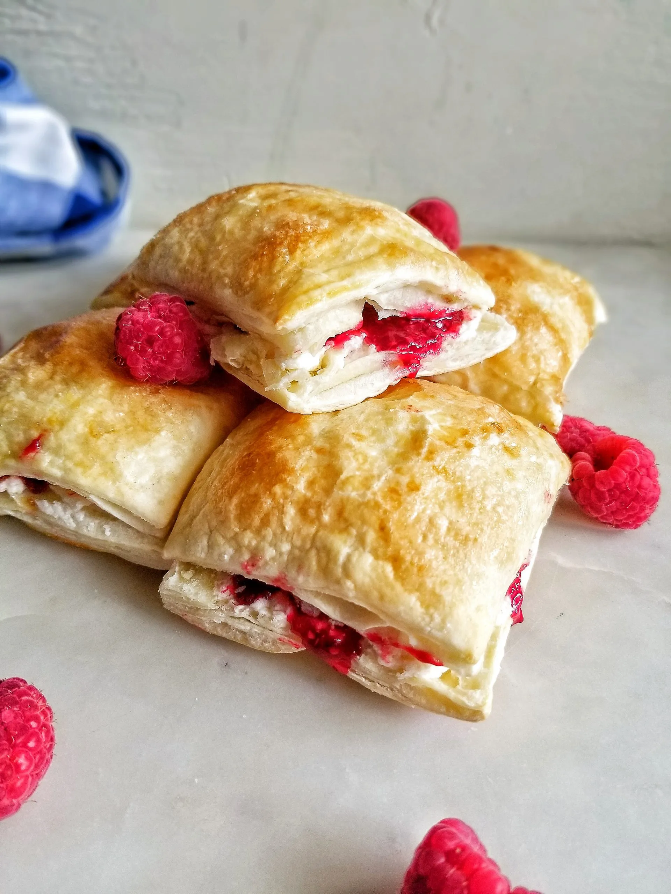

Flakies

What is it?
The original "Passion Flakie" is an iconic prepackaged lunch-box treat, produced by the renowned Vachon Bakery, a heritage brand rooted in Quebec.
A Flakie is a layered puff pastry with fruit jam or compote, traditionally raspberry-apple jam, and a whipped cream filling.
This recipe will take 45 minutes and yield 9-16 Flakies depending on the size you prefer
Preheat oven to 400 degrees F
For the Pastry, you will need the following 3 ingredients:
- 2 sheets of 12-inch square Puff Pastry, store bought
- Whole or 2% milk
- A sprinkle of Coarse Sugar, Turbinado or Demerara
For the Compote, you will need the following 4 ingredients:
- 2 cups Raspberries, frozen or fresh
- 1/2 cup White Sugar
- 2 teaspoons Corn Starch
- 1/4 cup Water
For the Whipped Cream, you will need the following 4 ingredients:
- 1/3 cup Butter
- 1 1/2 cups Icing Sugar
- 2 tablespoons Milk
- 1 teaspoon Vanilla extract
Steps to prepare Pastry:
- Let Puff Pastry thaw in the fridge.
- Once thawed, unroll one Pastry sheet on a parchment lined baking sheet.
- Lightly brush over Milk onto the unrolld Pastry sheet.
- Unroll the second Pastry Sheet and place it ontop of the first Pastry sheet.
- Then chill in the fridge for 15 minutes.
- Once the Pastry has chilled, use a sharp knife and cut the Pastry into 9, or 16 equal pieces.
- Spread the squares 1 inch apart and lightly brush Milk over tops.
- Sprinkle the tops with Coarse Sugar and place in oven for 15-20 minutes, or until golden-brown
- Allow the Pastry to fully cool on a wired rack.
Steps to prepare Compote:
- On the stove-top in a medium pot combine Raspberries and Sugar over Medium heat.
- Bring mixture to a light simmer, continue simmering for 15 minutes while stirring occasionally.
- Dissolve Corn Starch into Water, then add it to the Raspberry Sugar mixture and cook for an additional 4 minutes.
- Remove from heat and allow to fully cool to room temperature.
Steps to prepare Cream:
- Using a stand mixer or electric hand mixer beat together Butter, Icing Sugar, Milk, and Vanilla extract.
- Beat until the Cream is smooth and creamy.
Steps to assemble the Flakies:
Note: You do not need to assemble all Flakies at once if not being eaten that day. The Pastry, Compote, and Cream store well for a few days in the fridge, in air-tight containers or zip-lock bags. However, they are best enjoyed fresh with good company.
- Carefully cut the Pastry horizontally.
- Gently spread 1 tablespoon of Cream on one side of the Pastry, and 1 tablespoon of compote on the other side.
- Lightly put the sides back together.
- Enjoy this homemade take on a famous Canadian sweet-treat! Don't mind the flakey crumbs that will cover your shirt; that's apart of the Canadian Flakie experience!
Back to Recipes